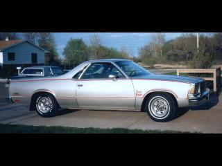

This is a 1979 Chevrolet El Camino, this model was called the"Royal Knight", and like the other'79 I had,it had a 305 cu in. V-8..however this one had an automatic transmission. I especially liked the 305's, for both performance and economy.